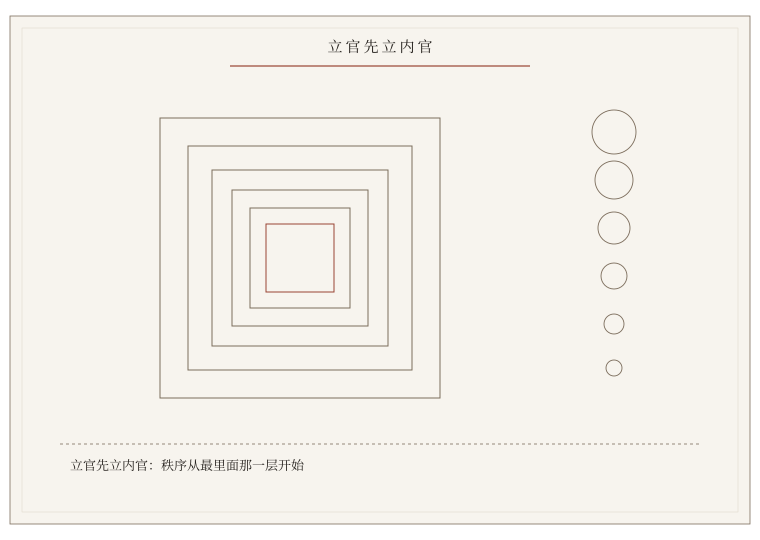

曲礼下 · 二·四十三 · 第 166 课
天子有后、有夫人、有世妇、有嫔、有妻、有妾。注「妻，八十一御妻，《周礼》谓之女御……妾，贱者」。
说什么事：六等之内官。疏「天子立官，则先从后妃为始」。
落在哪一层：礼。论内官之等与名。
为何编在此位：上节论天子之丧称，此节转天子之宫。由死及生，由名及制。
【经】天子有后，有夫人，有世婦，有嬪，有妻，有妾。
【注】妻，八十一御妻，《周禮》謂之「女御」，以其御序於王之燕寢。妾，賤者。
【疏】此一节总论立男官女官之事。「天子有后」者，天子立官，则先从后妃为始。所以然者，为治之法，刑于寡妻，始于家邦，终于四海，故删《诗》则以后妃为首。若论气先阴后阳，故此言「天子有后」也。谓之为后者，后，后也，言其后于天子，亦以广后胤也。「有夫人」者，夫，扶也，言扶持于王也。「有世妇」者，妇，服也，言其进以服事君子也，以其犹贵，故加以「世」言之，亦广世胤也。「有嫔」者，嫔，妇人之美称，可宾敬也。「有妻」者，郑注《内则》云：「妻之言齐也，以礼见问，得与夫敌体也。」今此言齐者，以进御于王之时，暂有齐同之义。「有妾」者，郑注《内则》云：「妾之言接也，闻彼有礼，走而往焉，以得接见于君子也。」《周礼》则嫔在世妇上，又无妾之文也。今此所陈与《周礼》杂而不次者，记者之言，不可一依《周礼》，或可杂夏、殷而言之。
后 疏「后，后也」，言其后于天子。又「广后胤」。
夫人 疏「夫，扶也」，扶持于王。
世妇 疏「妇，服也」，进以服事。「犹贵，故加以世」。
嫔 疏「妇人之美称，可宾敬也」。
妻 注「八十一御妻」。《内则》注「妻之言齐」，进御时暂有齐同之义。
妾 注「贱者」。《内则》注「妾之言接」。
天子有后，有夫人，有世妇，有嫔，有妻，有妾。
此节只列六等之名，不着一事。疏却把它说成一件事的起点：立官先立内官。理由引《诗》之教——「刑于寡妻，始于家邦，终于四海」。一个朝廷的秩序，从最里面那一层开始。
第一层 先内后外 疏「天子立官，则先从后妃为始」。这不是尊女，是治法的次序：能齐家，才谈得上治国。礼把最私的一处放在最前。
第二层 名义各有训 后、夫、妇、嫔、妻、妾，六名各有其训，皆取一字之义。礼的称谓不从美称来，从职分来。
第三层 杂而不次 疏明言「今此所陈与《周礼》杂而不次者，记者之言，不可一依《周礼》」。此一语最见读法：礼书非一部整齐的法典，是记者的编次，其中有夏殷之遗。
第四层 御法之细 疏述御法甚详：六寝、五燕寝、次第上御、十五日而遍、女史彤管记其日月、以金环银环进退。此一节把最不可言者，写成了可以记账的制度。礼的力量，常在这种地方。
与今日何干 任何组织先定最内那一圈的秩序——家里、身边、贴身的人。那圈乱，外面的章程再全也白搭。
| 左 | 右 |
|---|---|
| 天子有后 | 后，后于天子，广后胤 |
| 有夫人 | 夫，扶也 |
| 有世妇 | 妇，服也；犹贵，故加世 |
| 有嫔 | 妇人之美称，可宾敬 |
| 有妻 | 八十一御妻，进御时暂齐 |
| 有妾 | 贱者；妾之言接 |
| 杂而不次 | 记者之言，不可一依《周礼》 |
画六个同心方框，自外至内层层收小，各框左上一角画一道短竖以标示层级；最内一框最小、四角略作圆。六框之间以极淡的点线填充。框外右侧自上而下画六个逐渐变小的小圆，与六框一一相对（示御序之次）。不写文字、不画人。赭色只用在最内一框的边线上。
